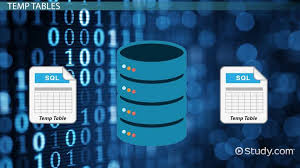

GunnerTholinAnalytics@Gmail.com
816-642-4229
Home
Landing
Generic
Elements
Get Started
Log In
Gunner Tholin Data Analyst Portfolio
View Hundreads of SQL queries and dashboards
Get Started
Exploring online Business Data
Tableau Dashboards
Manipulating AirBnB data
Order By, Group by, Joins, Unions and more

Exlporing string functions and temp tables
Creating tables & stored procedures